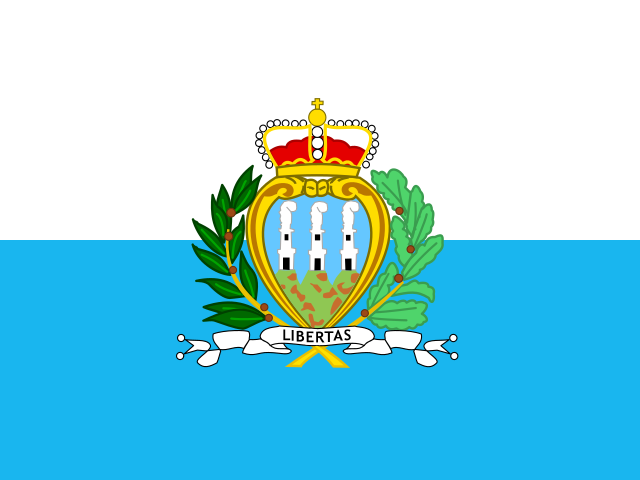
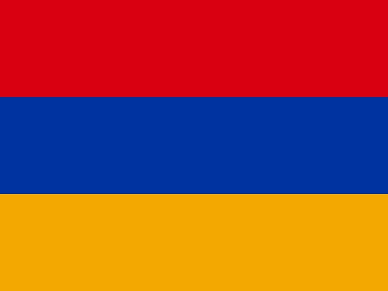

Question 161Verified completed result

Flag / Country🟩 Independent
Your answer: san marinoCorrect: San Marino
Capital🟩 Independent
Your answer: san marinoCorrect: San Marino
Language🟩 Independent
Your answer: italianCorrect: Italian
Batch 17 · Q161–Q170 · 20 October 2026 · 30/30 Independent
| Score | Flags / Country | Capitals | Languages |
|---|---|---|---|
| Pure | 10/10 (100%) | 10/10 (100%) | 10/10 (100%) |
| Pure + Assisted | 10/10 (100%) | 10/10 (100%) | 10/10 (100%) |
| Independent | 10 | 10 | 10 |
| Assisted | 0 | 0 | 0 |
| Wrong | 0 | 0 | 0 |
| Cancelled | 0 | 0 | 0 |
| Score | Flags / Country | Capitals | Languages |
|---|---|---|---|
| Pure | 170/170 (100%) | 170/170 (100%) | 170/170 (100%) |
| Pure + Assisted | 170/170 (100%) | 170/170 (100%) | 170/170 (100%) |
| Independent | 170 | 170 | 170 |
| Assisted | 0 | 0 | 0 |
| Wrong | 0 | 0 | 0 |
| Cancelled | 0 | 0 | 0 |



bnom bnah accepted as a contextual phonetic attempt for Phnom Penh; Khmer-Cambodian clearly identifies Khmer.

rjkyvyk accepted as a condensed phonetic spelling of Reykjavík with recognizably preserved consonant pattern, in Iceland context.

princope and portguese accepted as spelling variants.

yeravan and armenuian accepted as phonetic variants.

fijian-english contains two independently valid Fijian languages.

Congo understood as Republic of Congo (Brazzaville), under standing Congo/DR Congo rule.


kaboul is accepted common transliteration of Kabul; bashtu is an unambiguous Pashto pronunciation/spelling, with Afghan descriptor.
| Q | Your Country | Correct Country | Flag | Your Capital | Correct Capital | Capital | Your Language | Correct Language(s) | Language |
|---|---|---|---|---|---|---|---|---|---|
| 161 | san marino | San Marino | 🟩 Independent | san marino | San Marino | 🟩 Independent | italian | Italian | 🟩 Independent |
| 162 | kenya | Kenya | 🟩 Independent | nairobi | Nairobi | 🟩 Independent | english | Swahili; English | 🟩 Independent |
| 163 | cambodia | Cambodia | 🟩 Independent | bnom bnah | Phnom Penh | 🟩 Independent | khmer-cambodian | Khmer | 🟩 Independent |
| 164 | iceland | Iceland | 🟩 Independent | rjkyvyk | Reykjavík | 🟩 Independent | iclandic | Icelandic | 🟩 Independent |
| 165 | sao tome and princope | Sao Tome and Principe | 🟩 Independent | sao tome | São Tomé | 🟩 Independent | portguese | Portuguese | 🟩 Independent |
| 166 | armenia | Armenia | 🟩 Independent | yeravan | Yerevan | 🟩 Independent | armenuian | Armenian | 🟩 Independent |
| 167 | fiji | Fiji | 🟩 Independent | suva | Suva | 🟩 Independent | fijian-english | English; Fijian; Fiji Hindi | 🟩 Independent |
| 168 | congo | Republic of the Congo | 🟩 Independent | brazaville | Brazzaville | 🟩 Independent | french | French (official); Lingala; Kituba (national) | 🟩 Independent |
| 169 | jamaica | Jamaica | 🟩 Independent | kingston | Kingston | 🟩 Independent | english | English; Jamaican Patois (spoken) | 🟩 Independent |
| 170 | afghanistan | Afghanistan | 🟩 Independent | kaboul | Kabul | 🟩 Independent | afghani-bashtu | Dari; Pashto | 🟩 Independent |
All 30 components Independent without clues. Accepted phonetic spellings include bnom bnah for Phnom Penh, rjkyvyk for Reykjavík, kaboul for Kabul, and bashtu for Pashto. Congo means Republic of the Congo under the established game rule.
170 / 195 countries · Batch 17 of 20 complete · 25 remaining
Combined Pure 510/510: Flags 170/170; Capitals 170/170; Languages 170/170.